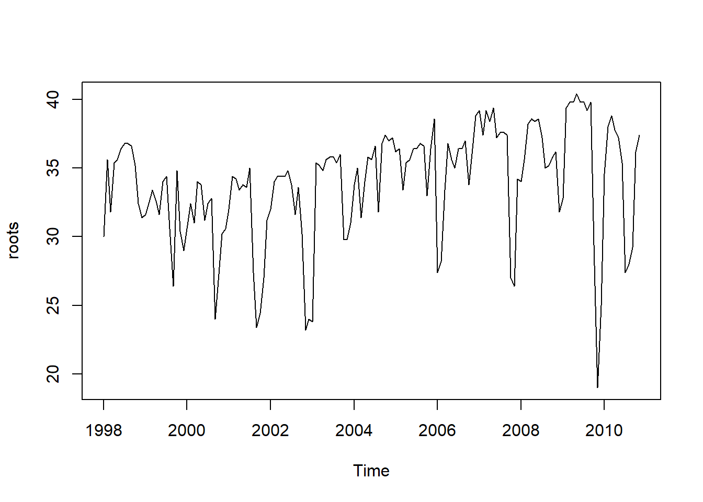
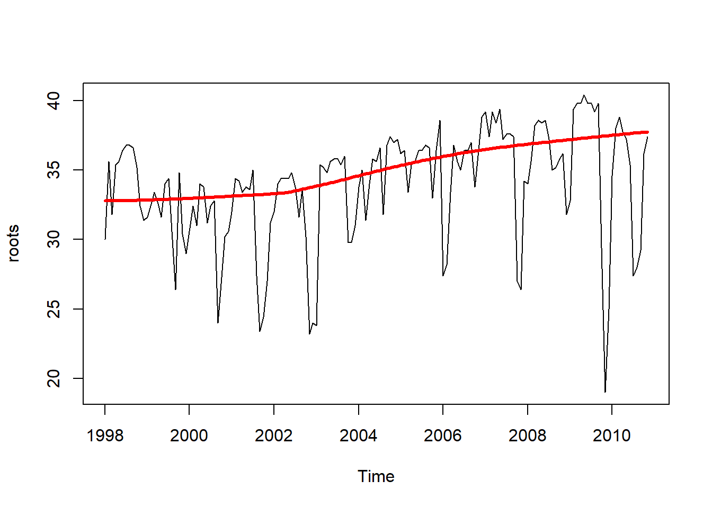
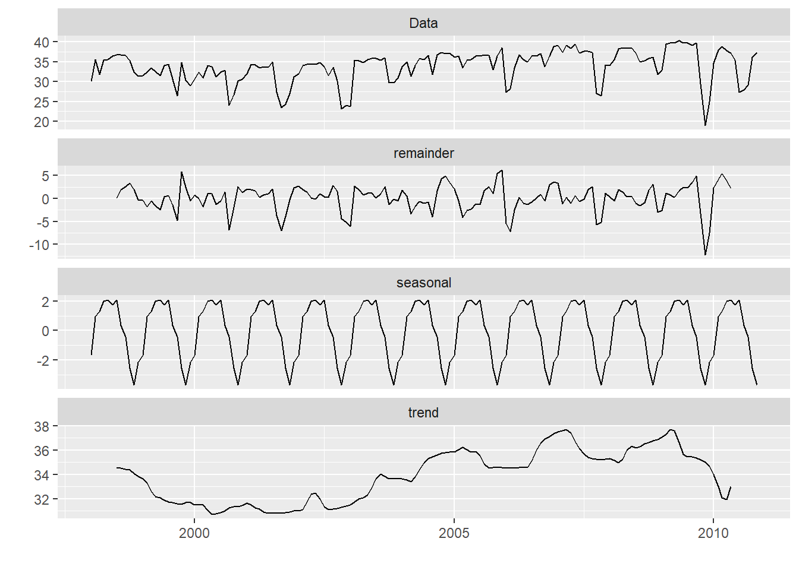
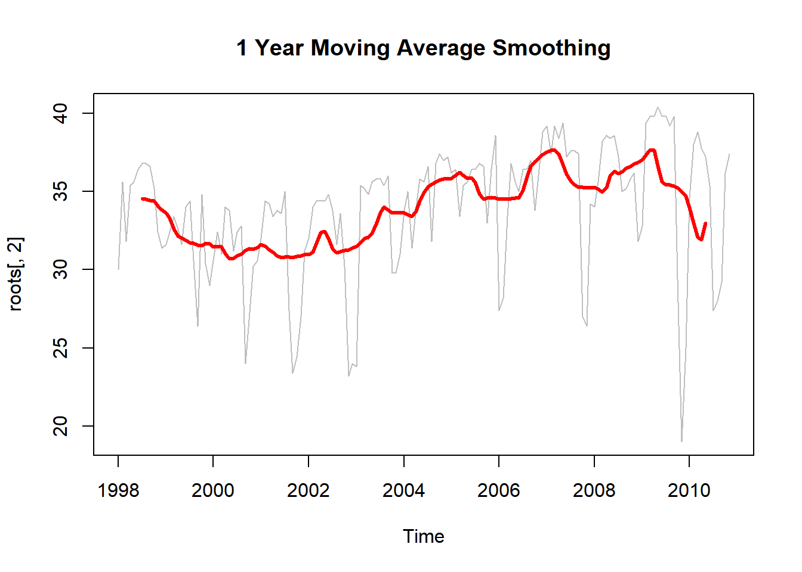
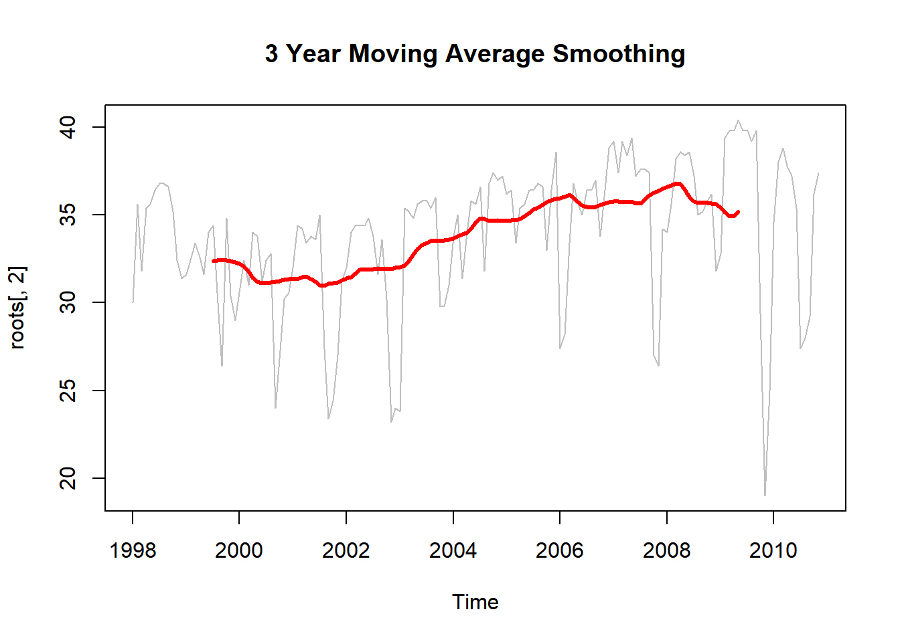
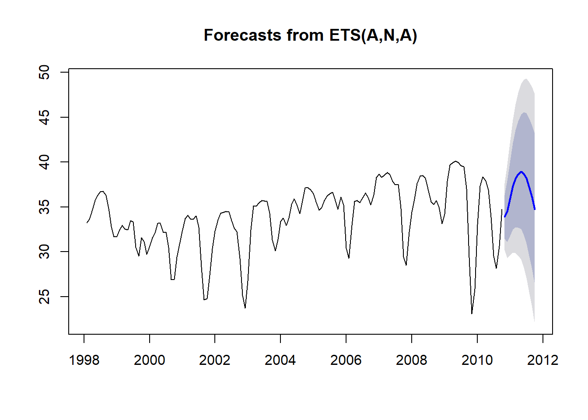
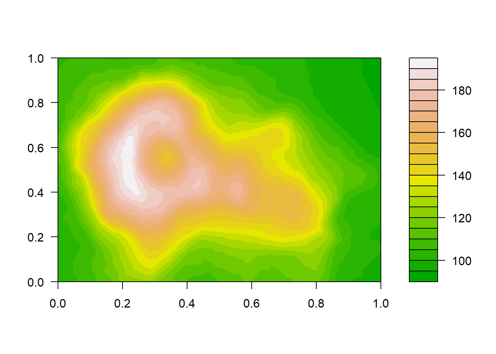

18 Sensoriamento remoto
18.1 Imagens de RPAs
Este capítulo oferece uma introdução ao processamento e classificação de imagens de RPAs no ambiente R, usando algoritmos de aprendizado capazes de realizer diversos processamentos. Ele também fornece um tutorial de referência conciso e prático, que oferece aos leitores uma nosso geral do que é possível realizar no Sistema R com o processamento e classificação de imagens de RPAs.
É necessário instalar alguns pacotes necessários para aplicar esta tarefa:
install.packages("devtools")
library(devtools)
install_github("filipematias23/FIELDimageR")
install.packages("sp")
install.packages("raster")
install.packages("rgdal")Carregar os pacote que foram baixados:
## Loading required package: sp##
## Attaching package: 'raster'## The following object is masked from 'package:hydroTSM':
##
## extract## The following object is masked from 'package:tidyr':
##
## extract## The following object is masked from 'package:dplyr':
##
## select## The following objects are masked from 'package:MASS':
##
## area, selectBaixar a imagem ortomosaicada:
Plotar a imagem nas bandas RGB:

Remover o solo e trabalhar apenas com a vegetação para aplicar os índices de vegetação RGB
## [1] "3 layers available"
Aplicado os índices de vegetação.
Aplicaremos o índice NGRDI, BGI e podemos criar um índice usando as bandas disponíveis. Criaremos como exemplo myIndex com a fórmula Red-Blue/Green
EX1.Indices<- indices(mosaic = EX1.RemSoil$newMosaic, Red = 1, Green = 2, Blue = 3,
index = c("NGRDI","BGI"), myIndex = c("(Red-Blue)/Green"))## [1] "3 layers available"
18.2 Imagens de satélites
Esse procedimento será realizado com imagens de satélite (Sentinel 2), porêm pode ser aplicado com imagens de RPA, desde que sejam multiespectrais.
Carregar pacotes necessários para trabalhar com os dados raster. Caso não tenha algum dos pacotes, realize a sua instalação.
## rgdal: version: 1.4-8, (SVN revision 845)
## Geospatial Data Abstraction Library extensions to R successfully loaded
## Loaded GDAL runtime: GDAL 2.2.3, released 2017/11/20
## Path to GDAL shared files: C:/Users/Jefferson/Documents/R/win-library/3.6/rgdal/gdal
## GDAL binary built with GEOS: TRUE
## Loaded PROJ.4 runtime: Rel. 4.9.3, 15 August 2016, [PJ_VERSION: 493]
## Path to PROJ.4 shared files: C:/Users/Jefferson/Documents/R/win-library/3.6/rgdal/proj
## Linking to sp version: 1.4-1## Loading required package: viridisLiteBaixar o arquivo . sentinel2.tif.
Visualizar os dados
## class : RasterLayer
## band : 1 (of 12 bands)
## dimensions : 507, 848, 429936 (nrow, ncol, ncell)
## resolution : 9.217891e-05, 9.217891e-05 (x, y)
## extent : -4.320218, -4.242051, 56.45366, 56.50039 (xmin, xmax, ymin, ymax)
## crs : +proj=longlat +datum=WGS84 +no_defs +ellps=WGS84 +towgs84=0,0,0
## source : D:/livro/TudodoRa/sentinel2.tif
## names : sentinel2É necessário criar camadas individuais para cada uma das bandas espectrais:
b1 <- raster('sentinel2.tif', band=1)
b2 <- raster('sentinel2.tif', band=2)
b3 <- raster('sentinel2.tif', band=3)
b4 <- raster('sentinel2.tif', band=4)
b5 <- raster('sentinel2.tif', band=5)
b6 <- raster('sentinel2.tif', band=6)
b7 <- raster('sentinel2.tif', band=7)
b8 <- raster('sentinel2.tif', band=8)
b9 <- raster('sentinel2.tif', band=9)
b10 <- raster('sentinel2.tif', band=10)
b11 <- raster('sentinel2.tif', band=11)
b12 <- raster('sentinel2.tif', band=12)Comparar duas bandas para ver se elas possuem a mesma extensão:
## [1] TRUEPlotar a banda 4 para pré-visualização:


Visualizar a imagem nas bandas do RGB:
RGB <- stack(list(b4, b3, b2))
plotRGB(RGB, axes = TRUE, stretch = "lin", main = "Sentinel RGB colour composite")
Juntar todas as bandas num só arquivo:
Aplicar o índice de vegetação NDVI, para o Sentinel 2 com: NIR = 8, red = 4.
Criar a VI (vegetation index) por meio de função
NDVI:

Outras fórmula de aplicar o NDVI
vi2 <- function(x, y) {
(x - y) / (x + y)
}
ndvi2 <- overlay(st[[8]], st[[4]], fun=vi2)
plot(ndvi2, col=rev(terrain.colors(10)), main="Sentinel2-NDVI")
Visualizar o NDVI em histograma
hist(ndvi,
main = "Distribuição dos valores de NDVI",
xlab = "NDVI",
ylab= "Frequência",
col = "wheat",
xlim = c(-0.5, 1),
breaks = 30,
xaxt = 'n')
axis(side=1, at = seq(-0.5,1, 0.05), labels = seq(-0.5,1, 0.05))
Visualizar apenas a vegetação com NDVI acima de 0.4:

Reclassificar o NDVI e difini-lo por classes numéricas:
vegc <- reclassify(ndvi, c(-Inf,0.25,1, 0.25,0.3,2, 0.3,0.4,3, 0.4,0.5,4, 0.5,Inf, 5))
plot(vegc,col = rev(terrain.colors(4)), main = 'NDVI reclassificado')Criar uma classificação não supervisionada a partir do NDVI:
Converter o raster (NDVI) a um vetor/matriz:
## num [1:429936] 0.791 0.791 0.785 0.783 0.783 ...É importante definir o gerador de pontos, porque o “kmeans” inicia os centros em locais aleatórios:
Criar 10 clusters, permitir 500 iterações, comece com 5 conjuntos aleatórios usando o método Lloyd
Ver o vetor/matriz:
## List of 9
## $ cluster : int [1:429936] 7 7 7 7 7 7 7 4 4 7 ...
## $ centers : num [1:10, 1] -0.525 0.421 0.846 0.696 0.233 ...
## ..- attr(*, "dimnames")=List of 2
## .. ..$ : chr [1:10] "1" "2" "3" "4" ...
## .. ..$ : NULL
## $ totss : num 156503
## $ withinss : num [1:10] 67.4 23.6 28.1 28.5 32.4 ...
## $ tot.withinss: num 484
## $ betweenss : num 156020
## $ size : int [1:10] 4650 8155 71872 45902 10754 58153 58643 18762 4109 148936
## $ iter : int 287
## $ ifault : NULL
## - attr(*, "class")= chr "kmeans"Crie uma cópia do NDVI para não perder os dados:
Agora substitua os valores das células de varredura pelo kmncluster$cluster:
Realize o plot do NDVI e do kmeans:
par(mfrow = c(1, 2))
plot(ndvi, col = rev(terrain.colors(10)), main = "NDVI")
plot(knr, main = "Kmeans", col = viridis_pal(option = "D")(10))
Se quiser traçar a classificação kmeans ao lado da renderização do RGB para verificar a qualidade da classificação e identificação das classes:
par(mfrow = c(1, 2))
plotRGB(RGB, axes = FALSE, stretch = "lin", main = "RGB")
plot(knr, main = "Kmeans", yaxt = 'n', col = viridis_pal(option = "D")(10))
Aplicar outros índices de vegetação com o pacote LSRS:
NDVI=NDVI(b8,b4)
SAVI=SAVI(b8,b4)
TGSI=TGSI(b4,b2,b3)
MSAVI=MSAVI(b8,b4, Pixel.Depth=1)
EVI=EVI(b8,b4,b2,Pixel.Depth=1)
NBR=NBR(b8,b11)par(mfrow = c(3, 2))
plot(NDVI,lwd=4,main="NDVI",xlab="easting", ylab="northing")
plot(SAVI,lwd=4,main="SAVI",xlab="easting", ylab="northing")
plot(TGSI,lwd=4,main="TGSI",xlab="easting", ylab="northing")
plot(MSAVI,lwd=4,main="MSAVI",xlab="easting", ylab="northing")
plot(EVI,lwd=4,main="EVI",xlab="easting", ylab="northing")
plot(NBR,lwd=4,main="NBR",xlab="easting", ylab="northing")
18.3 Curvas de nível e modelo 3D a partir do Modelo Digital de Elevação
Primeiro carregar os pacotes necessários
Carregar o dado raster do pacote Raster (Volcano) para ser usado como exemplo:

Criar as curvas de nível:
cont <- contourLines(volcano)
fun <- function(x) x$level
LEVS <- sort(unique(unlist(lapply(cont, fun))))
COLS <- terrain.colors(length(LEVS))Plotar somente as curvas de nível:

Plotar o modelo 3D com curvas de nível:
Exemplo 1:

Exemplo 2:

Exemplo 3:

Exemplo 4:

Exemplo 5:

18.4 Modelo de altura do dossel (CHM) com o MDT e MDE
O modelo de altura da copa (CHM) representa a altura das árvores. Este não é um valor de elevação, é a altura ou a distância entre o chão e o topo das árvores. Alguns modelos de altura da copa também incluem edifícios, portanto, é necessário olhar atentamente para seus dados para garantir que eles foram limpos corretamente antes de assumir que representam todas as árvores
Carregar os pacotes:
Carregar o dado MDE:
MDE <- raster("https://www.dropbox.com/s/kifc93rdhz2xykm/DSM.tif?dl=1")
plot(MDE, main = "Modelo Digital de Elevação (DEM)")
Carregar o dado MDT:
MDT <- raster("https://www.dropbox.com/s/sfbr3blydvxg75v/DTM.tif?dl=1")
plot(MDT, main = "Modelo Digital do Terreno (MDT)")
Existem diferentes maneiras de calcular um CHM. Uma maneira fácil é subtrair o MDE do MDT.
Criar o Modelo de Altura do Dossel (CHM):

Às vezes, um gradiente de cores é útil para representar uma variável contínua. Outras vezes, porém, é útil aplicar cores a intervalos específicos de valores em uma varredura. Esses intervalos podem ser gerados estatisticamente ou simplesmente visuais.
Criar intervalos (alturas) no CHM:
plot(CHM,
breaks = c(0, 2, 10, 20, 30),
main = "Modelo de Altura do Dossel",
col = c("white", "brown", "springgreen", "darkgreen"))
É possível salvar o CHM para ser usado em outras plataformas: